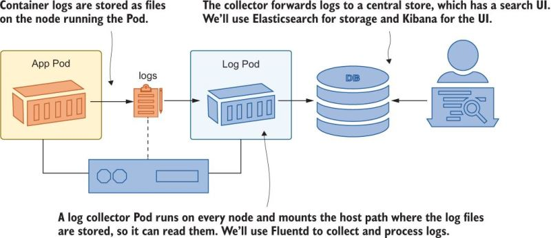
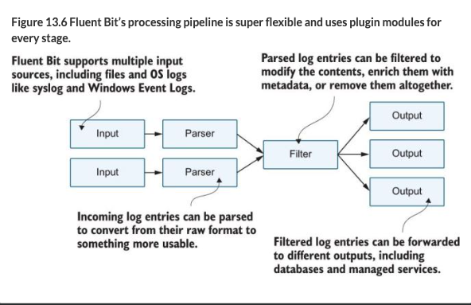

Logging
From Chapter 13
K8s stores log entries in a directory on each node. If you want to combine all the logs, you need a system to do this, which can also be done on K8s. This is referred to as a “log collector”

How to see logs from all pods for an app?
kubectl logs -l app=timecheck --all-containers -n kiamol-ch13-dev --tail 1The --all-containers gets all the logs from all the containers in the pod (remember that pods can have more than one container, if the pod has more than one container you have to specify the container name with -c <container name>). The -l app=timecheck is a label selector. The -n kiamol-ch13-dev is the namespace. The --tail 1 is to only show the last line of the log.
As a practical matter, it’s hard to use container logs directly, and you need a log collector.
Logs on Nodes
Logs are stored in /var/log/containers on each node. We can use a HostPath volume mount to see what this looks like:
...
containers:
- name: sleep
image: kiamol/ch03-sleep
volumeMounts:
- name: varlog
mountPath: /var/log
- name: varlibdockercontainers
mountPath: /var/lib/docker/containers
readOnly: true
volumes:
- name: varlog
hostPath:
path: /var/log
- name: varlibdockercontainers
hostPath:
path: /var/lib/docker/containersSince we mounted the node directory, we can see the logs at the path where they are stored on the node: /var/log/containers. The naming convention is <pod name>_<namespace>_<container name>-<container id>.log. The container ID is the first 12 characters of the container ID. The container ID is the same as the container ID in the docker ps output. These log files are in a JSON format, and can be parsed with jq.
% kubectl exec -it deploy/sleep -- ls var/log/containers
coredns-95db45d46-ckb68_kube-system_coredns-d6e70a7dabdc81bcd18d83595ae92f577036912cbf5ccb36fbf46cd95476ba0f.log
coredns-95db45d46-pnm2p_kube-system_coredns-723c2ba38c0511eb3582a8ffdf852195ae47385fc5aaddf6444888d23265b1a9.log
etcd-docker-desktop_kube-system_etcd-e9bf1a84556e483e44aae7a6596daa125d7b46c2df442f7d26b45a32de62af07.log
kube-apiserver-docker-desktop_kube-system_kube-apiserver-fc1afa677baa0aacfd6f9f9c5a675748ba2a383f17df4e99aaa8673116aa5a2e.log
kube-controller-manager-docker-desktop_kube-system_kube-controller-manager-2d3eba90c4496a5256e7f3e29a7fecf4dc5922db3364b216023806921b156fc7.log
...The contents of one of thes json files look like this:
{
"log": "2020-05-18T14:56:00.000000Z\tinfo\tEpoch 0 starting\n",
"stream": "stdout",
"time": "2020-05-18T14:56:00.000000000Z"
}They are really like jsonl files where each line is its own record.
EFK Stack
We will use the EFK Stack: Elasticsearch, Fluentd, Kibana. This is a common logging stack for K8s.
Log Collector: Fluentd
We didn’t go deep into FluentD or Fluent-Bit. This may not be that important in the large scheme as in the cloud you have toosl that help with this.
Fluent Bit is a lightweight version of FluentD. It uses a DaemonSet to run a pod on each node, which uses a HostPath volume mount to access the log files.
It reads the log files from the node and sends them to Elasticsearch. It can also parse the logs and add metadata to them. It can also send the logs to other destinations, such as Splunk or AWS CloudWatch.
apiVersion: apps/v1
kind: DaemonSet
metadata:
name: fluent-bit
namespace: kiamol-ch13-logging
labels:
kiamol: ch13
spec:
selector:
matchLabels:
app: fluent-bit
template:
metadata:
labels:
app: fluent-bit
spec:
serviceAccountName: fluent-bit
containers:
- name: fluent-bit
image: fluent/fluent-bit:1.8.11
volumeMounts:
- name: fluent-bit-config
mountPath: /fluent-bit/etc/
- name: varlog
mountPath: /var/log
- name: varlibdockercontainers
mountPath: /var/lib/docker/containers
readOnly: true
volumes:
- name: fluent-bit-config
configMap:
name: fluent-bit-config
- name: varlog
hostPath:
path: /var/log
- name: varlibdockercontainers
hostPath:
path: /var/lib/docker/containersYou should create fluent-bit DaemonSet in a different namespace because you typically want it to run as a shared service used by all the applications running on the cluster. It doesn’t matter that its running in a different namespace because it is reading from each node so it doesn’t matter.
There are different pieces you can configure with FluentD

We’re currently running a simple configuration with three stages:
- the input stage reads log files
- the parser stage deconstructs the JSON log entries,
- and the output stage writes each log as a separate line to the standard output stream in the Fluent Bit container.
Below is part of a Fluent Bit configuration file:
kind: ConfigMap
...
[INPUT]
Name tail # Reads from the end of a file
Tag kube.* # Uses a prefix for the tag
Path /var/log/containers/timecheck*.log
Parser docker # Parses the JSON container logs
Refresh_Interval 10 # Sets the frequency to check the file list
[OUTPUT]
Name stdout # Writes to standard out
Format json_lines # Formats each log as a line
Match kube.* # Writes logs with a kube tag prefixFluent Bit uses tags to identify the source of a log entry. The tag is added at the input stage and can be used to route logs to other stages. In this configuration, the log file name is used as the tag, prefixed with kube. The match rule routes all the kube tagged entries to the output stage so every log is printed out, but the input stage reads only the timecheck log files, so those are the only log entries you see.
When you apply the configuration (revisit this chapter to see all the details), you can see the logs in the Fluent Bit container:
kubectl logs -l app=fluent-bit -n kiamol-ch13-logging --tail 2This will show you logs from all namespaces, as fluentd is reading the logs from all nodes.
Routing Output
If you look at the file fluentbit/update/fluentbit-config-match.yaml you will see a boilerplate config that is generic that will work with any cluster. (You just have to change the namespace and labels). You end up with tag that is kube.<namespace_name>.<container_name>.<pod_name>.<docker_id>- and then the log file name. Based on this, you can route output like so:
```(.yml file=“fluentbit/update/fluentbit-config-match-multiple.yaml”) [OUTPUT] Name stdout # The standard out plugin will Format json_lines # print only log entries where Match kube.kiamol-ch13-test.* # the namespace is test.
[OUTPUT] Name counter # The counter prints a count of Match kube.kiamol-ch13-dev.* # logs from the dev namespace.
This shows you that you can have different kinds of logs for different namespaces, for example the `dev` namespace is counting the lines of logs. The counter is a plugin that is built into FluentD.
### Elasticsearch
Elasticsearch is a database, where each datum can have different fields, there is no fixed schema. You access it via a REST API. Kibana is a web interface for Elasticsearch. Fluent Bit has an Elasticsearch output plugin that creates a document for each log entry using the Elasticsearch REST API. The plugin needs to be configured with the domain name of the Elasticsearch server, and you can optionally specify the index where documents should be created. Note that if there are logs that don't match an output rule, they will be discarded:
```{.yml filename="fluentbit-config-elasticsearch.yaml"}
[OUTPUT]
Name es # Logs from the test namespace
Match kube.kiamol-ch13-test.* # are routed to Elasticsearch
Host elasticsearch # and created as documents in
Index test # the "test" index.
[OUTPUT]
Name es # System logs are created in
Match kube.kube-system.* # the "sys" index in the same
Host elasticsearch # Elasticsearch server.
Index sysWe deploy Elasticsearch and Kibana and get the endpoint of Kibana.
I skipped the rest of this b/c I’m hoping cloud services provide a good logging stack for me. Also, you will likely want to use plugins for FluentD.